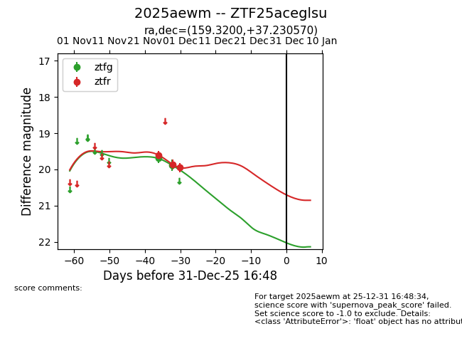
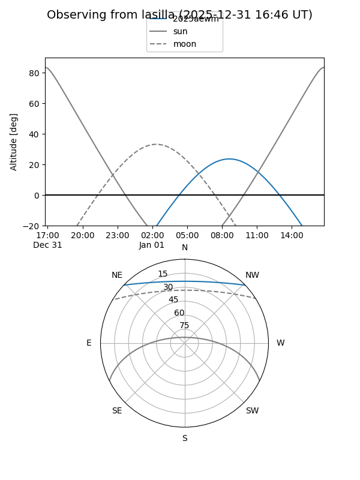
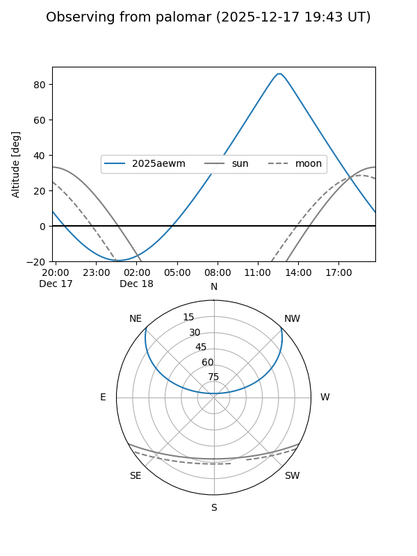
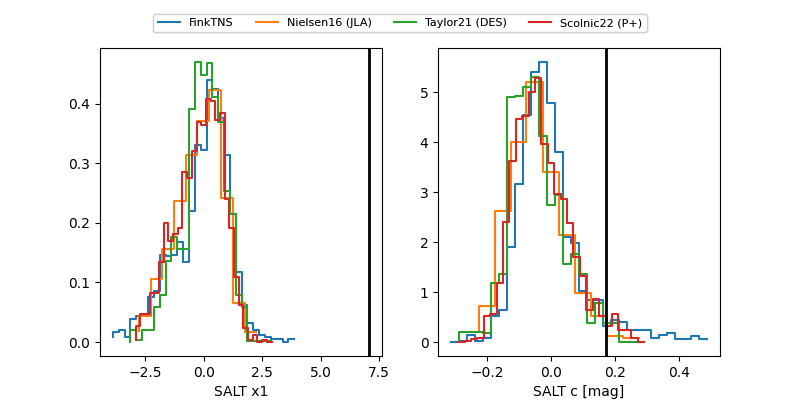

2025aewm
Target 2025aewm at 2025-12-31 16:59
Aliases and brokers:
FINK:
Lasair:
ALeRCE:
TNS:
YSE:
alt names
ZTF25aceglsu (ztf,fink_ztf)
2025aewm (tns,yse)
Coordinates:
equatorial (ra, dec) = 159.3200,+37.23057
equatorial (HMS+DMS) = 10:37:16.79,+37:13:50.05
galactic (l, b) = (184.7346,+60.05619)
Flags:
Photometry:
last ztfg=19.89, ztfr=19.95
2 ztfg, 3 ztfr detections
Lightcurve

Visibility


Additional plots
